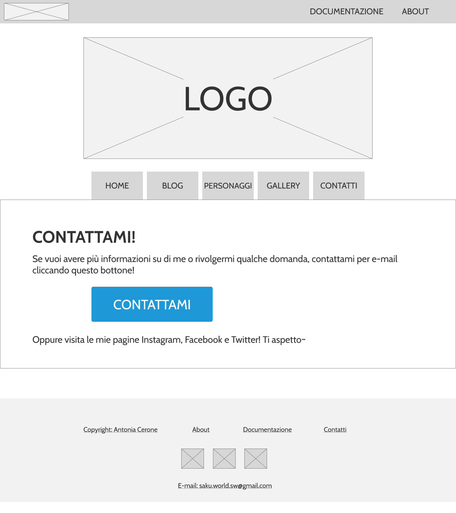

ABSTRACT
Saku World è un sito su un personaggio di mia invenzione creato per intrattenere gli utenti nel proprio tempo libero. In esso vengono man mano raccolte vicende e informazioni sul mio personaggio, tutte narrate direttamente da lei in prima persona, in modo che il lettore possa comprenderla al meglio. Il sito introduce un modo innovativo per raccontare le proprie storie; si presenta così come un “libro aperto” in costante aggiornamento. Oltre a ciò, il sito si offre anche come un ottimo portfolio per mostrare i miei lavori.
PROJECT MANAGEMENT PLAN
1. BENCHMARKING
- OBIETTIVO:
- TARGET UTENTE:
- COMPETITORS:
- - Zerocalcare: sito di un famoso fumettista italiano. Seppur abbia una grafica semplice e manchi di alcuni elementi (es. barra di navigazione), è comunque funzionale all’obiettivo proposto: quello di pubblicare le proprie strisce permettendo ai lettori di interagire con like su Facebook o commenti.
- - Alberto Madrigal: sito di un fumettista e illustratore spagnolo. In questo caso, il sito si presenta, oltre che come un blog in cui pubblicare principalmente le proprie tavole, anche come un portfolio in cui sono pubblicati i propri lavori (pagina “work”), come libri, illustrazioni, schizzi ad acquerello, ecc.
- - Dilloconunfumetto: sito di un fumettista, illustratore e grafico italiano. Anche qui il sito presenta un blog in cui l’autore pubblica, oltre che i propri lavori, anche riflessioni, novità sulla propria vita o eventi.
L’obiettivo del sito è quello di intrattenere l’utente nel suo tempo libero attraverso i miei personaggi e le mie storie, in modo che possa immergersi completamente nel mondo da me creato.
Il sito è principalmente indirizzato a un pubblico giovane, dai 14 anni in su, che ami leggere e sognare.
Per la ricerca dei competitor ho esaminato tre blog di artisti professionisti:
Il sito è attualmente in manutenzione.
La grafica è ottima e funzionale e il sito, con poche schede, semplice da usare.
È anche presente una sezione in cui richiedere commissioni.
Differentemente dai competitor, il mio sito è apparentemente gestito da un personaggio immaginario: tutte le storie, le strisce o le illustrazioni che vengono pubblicate riguardano lei, i suoi pensieri e la propria visione del mondo, permettendo al lettore di conoscere a 360° il personaggio da me creato.
2. STRUTTURA E LAYOUT
- ARCHITETTURA DEL SITO:
- WIREFRAME:
- LOOK AND FEEL:
- - Merryweather Sans, un sans serif semplice, ma perfetto per i titoli delle sezioni e dei post;
- - Lora, un font serif che non affatica la lettura, ma allo stesso tempo, poiché provvisto di grazie, ricorda maggiormente una scrittura manuale: per questo motivo è stato principalmente usato per il blog e la descrizione delle sezioni;
- - Cabin, un font sans-serif semplice usato principalmente per i menù di navigazione, per il footer e per le descrizioni delle rubriche.
- HOME
- BLOG
- PERSONAGGI
- GALLERY
- CONTATTI
- ABOUT

Per il sito ho usato prevalentemente sfumature di rosa, dal più chiaro (#ffdee5 o #ffcbeb) per sfondi e cornici, al più scuro (#ff3381), per il menù di navigazione, titoli, logo, pulsanti e link, in modo da creare più impatto. La scelta è ricaduta sul rosa per via del nome del personaggio: “Saku” da “Sakura”, che in giapponese indica gli alberi di ciliegio, i quali quando fioriscono colorano l’intera chioma dell’albero di rosa. Ho anche usato del grigio (#6c757d) per i link disabilitati e le date dei post. Inoltre, ho scelto dei colori non troppo saturi in modo da non appesantire la vista del lettore.
Per quanto riguarda i font, ho usato:
Tutte le immagini presenti nel sito sono state realizzate per introdurre il personaggio, i post del blog o le rubriche.
3. LINGUAGGI E STRUMENTI
- LINGUAGGI:
- STRUMENTI:
- - Bootstrap per i caroselli nella home, per le card (home, rubriche, personaggi), per le briciole di pane e i numeri di impaginazione nel blog;
- - W3.CSS per il layout del blog, successivamente modificato, e le immagini presenti nella gallery;
- - Canva per le immagini delle rubriche nella home;
- - Clip Studio Paint per la creazione del logo, dello sfondo, del favicon e dei disegni per il blog;
- - GitHub per la pubblicazione del sito;
- - Atom come editor per trascrivere il CSS e l'HTML;
- - Google Fonts per i font;
- - Google Analytics per misurare le visualizzazioni della pagina;
- - Fontawesome per le icone dei social nel footer;
- - Axure RP 10 per la creazione dei wireframe.
HTML, CSS.
Ho fatto anche uso di Javascript per le immagini in galleria.
COMMUNICATION STRATEGY DOCUMENT
1. BACKGROUND
Le pagine web analizzate sono al giorno d’oggi poco aggiornate; gli ultimi post dei blog risalgono al 2019 e gli autori prediligono attualmente l’uso di social network come Instagram, Facebook o Twitter, con cui diventa più semplice interagire con i fan. Inoltre, in tutti e tre i blog manca una vera e propria homepage e si parte direttamente dall’ultimo post pubblicato o dal proprio portfolio.
Oltretutto i blog di Zerocalcare e Dilloconunfumetto non presentano un menù in cui linkare i post pubblicati, per cui richiede tempo e pazienza da parte del lettore cercare le pubblicazioni meno recenti. Questo tipo di menù è presente nel blog di Alberto Madrigal, ma essendo situato in un angolo in basso della pagina non salta subito all’occhio del lettore.
Nonostante ciò i blog si rivelano comunque efficaci: basti pensare che Zerocalcare ha conquistato la sua fama proprio grazie a esso.
2. OBIETTIVI COMUNICATIVI
Il sito mira a creare uno spazio in cui il mio personaggio possa prendere vita, in modo che gli utenti possano conoscerlo a 360° e diventare veri e propri fan attraverso la lettura dei suoi racconti, dei suoi pensieri, dei suoi sentimenti, ecc. Indizi sulla sua personalità vengono rilasciati anche attraverso l’uso di una rubrica riguardante i propri gusti in fatto di moda, musica, arte e così via (consigli del giorno).
Si tratta di un obiettivo difficilmente raggiungibile con il solo uso dei social network, dove solitamente la descrizione di un post viene ignorata dagli utenti. Nel mio caso, infatti, social come Instagram o Facebook verranno utilizzati solo come mezzo per promuovere il sito e notificare i fan degli aggiornamenti che man mano verranno riportati.
Allo stesso tempo, il sito aiuterebbe anche a pubblicizzare il mio lavoro da artista (e, quindi, me stessa), permettendomi di diffondere i miei lavori e pensieri proprio per mezzo del personaggio e delle sue storie. Il lavoro si aggiunge quindi come parte del mio portfolio da presentare a editori in futuro per eventuali pubblicazioni.
3. TARGET AUDIENCE E MESSAGGIO
Trattandosi di un sito ricreativo, è aperto a tutti, in particolar modo ai giovani, senza distinzioni di sesso, genere, ecc., che amino trascorrere il proprio tempo libero leggendo le mie storie e che siano interessati a condividere le proprie opinioni al riguardo. L’importante è avere una buona conoscenza della lingua italiana e una connessione a Internet.
Target secondari sono artisti, in cerca di collaborazione o ispirazione, o eventuali editori.
4. PROMOZIONE
La promozione del sito avviene soprattutto tramite passaparola e l’uso di Twitter, Facebook e Instagram: è infatti stata creata una pagina per ogni social network qui nominato, in cui pubblico gli aggiornamenti effettuati all’interno del sito.
Inoltre, per ogni post pubblicato uso disegni differenti in modo da attirare l’attenzione dell’utente.
5. VALUTAZIONE DEI RISULTATI
- Almeno 20 like su un post di Instagram
- Almeno 20 follower sul profilo di Instagram
- Almeno 50 visualizzazioni sul sito web da parte di utenti unici